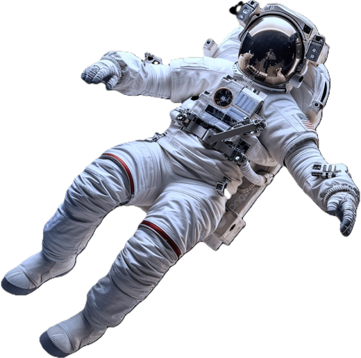

EWhat happens to a human body when it leaves Earth
In microgravity, the body completely reorganises itself within hours.
Tap the points to find out · drag to move
—
—
How you become an astronaut
Test your psychological profile, learn the real career path, and train with open resources.
Inspired by the psychological dimensions assessed in ESA selection (stress resilience, teamwork, tolerance of ambiguity). This is an informal, orientative version — not a clinical or official instrument.
European Space Agency
- Citizenship of an ESA member state
- Master's (or higher) in natural sciences, engineering, medicine or maths
- At least 3 years of professional experience
- Psychological, medical and teamwork aptitude
- Fluent English; other languages valued
- Open calls roughly every 10 years
NASA Astronaut Corps
- U.S. citizenship
- STEM master's (or equivalent flight hours / medicine)
- 2 years of relevant experience or 1,000h as pilot-in-command
- Pass the long-duration flight physical
- Selection process of about 2 years
SpaceX · Blue Origin · Axiom
- No closed "astronaut corps" required
- SpaceX flies NASA crews and private missions (Polaris)
- Blue Origin: suborbital flights, diverse profiles
- Axiom: private astronauts to the ISS with their own training
- Emerging route: payment, sponsorship or mission-based selection
Astronomy & space science
Free-to-audit university courses on space exploration and science.
Space exploration on edX
Programs from MIT and others on living and working in space.
ESA Education
Programs, grants and activities for students and young professionals.
NASA Learning Resources
Educational material, challenges and open activities for all ages.
FutureLearn · Space
Short courses on astronautics, planets and life beyond Earth.
ESA Cosmos
Scientific talks and outreach on ongoing missions.
European Space Agency
Official videos of European astronauts and life aboard the ISS.
NASA
Live launches, spacewalks and mission documentaries.
Chris Hadfield · CSA
The communicator-astronaut: everyday life in microgravity.
Earth from the ISS
Footage and testimonies on the overview effect and life in orbit.
Voices broadcasting from space
Astronauts sharing their daily life in real time. Tap a card to see their latest post on X.
Missions & news
Reference headlines linking to the official source. For an auto-updating feed, an RSS reader for NASA, ESA and private agencies is connected on the server.
Walk through the Station
Explore the interior module by module in Street View, without leaving this page. Drag to look around and use the arrows to move.
Tour in Google Street View. If it does not load embedded in some browser, open it fullscreen here.